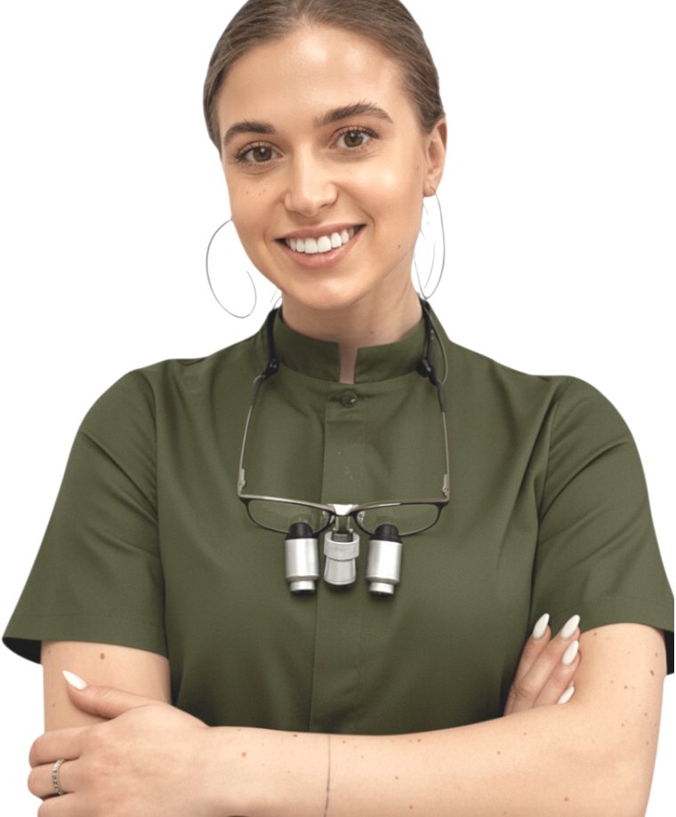

Ми поєднуємо турботу
з професіоналізмом
з турботою про Ваше здоровʼя та красу
Продовжую історію, в якій виросла
Вітаю! Мене звати Маргарита і ця клініка мій другий дім. Stomoks — частина мого життя, скільки себе пам’ятаю.
Вже 25 років ми працюємо в Києві на Солом’янці. Колись цю справу розпочав мій батько, а останні кілька років за нею стою я.
Для мене це не просто управління бізнесом. Це про те, як зберегти сімейний затишок та камерність, якими ми славимося чверть століття, і водночас зробити стоматологію сучасною і технологічною.

Маргарита Ігорівна Демянчук
Керівник клініки, лікар-терапевт
25 років
історії роботи клініки, довіри та щирої турботи
87%
пацієнтів приходять за рекомендацією
Наші цінності
У центрі кожного рішення — ви, ваше здоров’я та якість!
Тут вас слухають. Тут можна видихнути. Лікар пояснить усе спокійно і зрозуміло
Чесно показуємо весь план лікуваня наперед. Без підводних каменів
Якість
Наша мета — дати результат, який тримається довгі роки, з увагою до кожної деталі
Технології та обладнання
Стоматологічний мікроскоп
Ми використовуємо збільшення, щоб бачити те, що неможливо помітити неозброєним оком.
Це дозволяє точніше лікувати канали та зберігати максимум здорових тканин зуба.
Інтраоральний 3D-сканер
Ми використовуємо збільшення, щоб бачити те, що неможливо помітити неозброєним оком.
Це дозволяє точніше лікувати канали та зберігати максимум здорових тканин зуба.
Ендомотор
Ми використовуємо збільшення, щоб бачити те, що неможливо помітити неозброєним оком.
Це дозволяє точніше лікувати канали та зберігати максимум здорових тканин зуба.
Ендомотор
Ми використовуємо збільшення, щоб бачити те, що неможливо помітити неозброєним оком.
Це дозволяє точніше лікувати канали та зберігати максимум здорових тканин зуба.
Ендомотор
Ми використовуємо збільшення, щоб бачити те, що неможливо помітити неозброєним оком.
Це дозволяє точніше лікувати канали та зберігати максимум здорових тканин зуба.
Ендомотор
Ми використовуємо збільшення, щоб бачити те, що неможливо помітити неозброєним оком.
Це дозволяє точніше лікувати канали та зберігати максимум здорових тканин зуба.
Ендомотор
Ми використовуємо збільшення, щоб бачити те, що неможливо помітити неозброєним оком.
Це дозволяє точніше лікувати канали та зберігати максимум здорових тканин зуба.
Ендомотор
Ми використовуємо збільшення, щоб бачити те, що неможливо помітити неозброєним оком.
Це дозволяє точніше лікувати канали та зберігати максимум здорових тканин зуба.
@@include('parts/comfort.html')
@@include('parts/home-cases.html')
@@include('parts/reviews.html')
@@include('parts/home-insurance.html')
@@include('parts/contacts.html')
@@include('parts/footer.html')